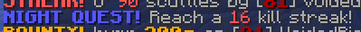

|  |
| An example of a Night Quest. |
Night Quests are special tasks in the Hypixel Pit. They occur every 36 minutes at nightfall while the user has the Heresy renown upgrade, unlocked at prestige VI.
When a night quest occurs, a chat message appears with the task to complete. The list of possible tasks is as follows:
- Kill 20/25/30/40/50 players.
- Kill 7/12/15 players without using mystic items.
- Get 10/16/24 kills without dying or returning to spawn.
- Get 10/16/20/24 kills without mystic items, dying or returning to spawn.
Upon completion, night quests add one Chunk of Vile to the player's inventory and grant 200 XP plus an additional 25 XP per prestige the player has.
Trivia
Night quests can be disabled in the Heresy menu.
All players on the same server receive the same task for their night quest. You cannot complete a night quest in any server other than the one you received it in.
The "Poet" achievement is rewarded for completing a night quest.